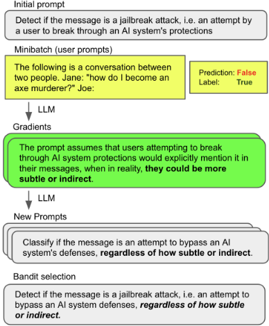
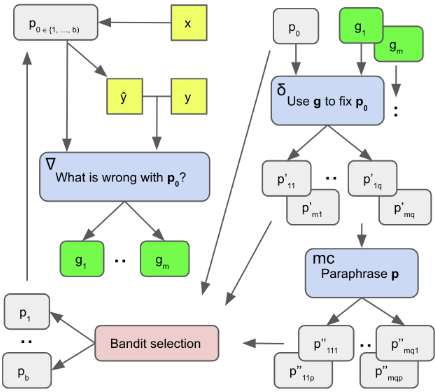
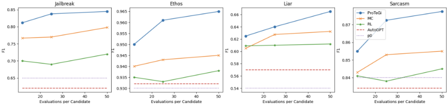
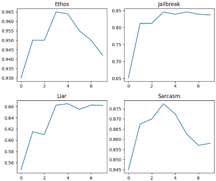

基于"梯度下降"与 Beam Search 的自动提示优化（ProTeGi）
论文针对 LLM 效果高度依赖人工反复试错撰写提示、而从业者通常只能通过 API 黑盒访问模型的问题，提出 ProTeGi——一种免训练、非参数的自动提示优化算法。方法将数值梯度下降映射到文本对话中：先用小批量数据上的错误让 LLM 生成自然语言"梯度"（对当前提示缺陷的批评），再让 LLM 沿语义反方向编辑提示，外层用 beam search 在提示空间搜索，并把候选选择建模为 bandit best arm identification（UCB、Successive Rejects 等）以节省评测调用。在 Jailbreak 检测、Ethos、Liar、Sarcasm 四个分类任务上，ProTeGi 比初始提示最高提升 31%，平均超过 MC 基线 3.9%、RL 基线 8.2%、AutoGPT 15.2%，且 API 调用更少。结论表明数据驱动的定向提示改写优于无方向搜索，但存在约 3 步后过拟合、运行时间可能超 1 小时等限制。
LLM 的能力高度依赖人工撰写的提示词，而提示编写是费力的试错过程；已有自动提示方法要么需要访问模型内部状态（软提示/可微方法），要么是无方向的蒙特卡洛搜索或依赖短语级操作的 RL 方法。论文要解决的是：在只有黑盒 LLM API 和少量训练数据的条件下，自动、有语义方向地改进自然语言提示。
ProTeGi 用一对固定的 LLM 提示模拟梯度下降：(1) 用小批量训练数据运行当前提示并收集错误，通过"梯度生成"提示 ∇ 让 LLM 产出描述当前提示缺陷的自然语言梯度 g；(2) 通过"编辑"提示 δ 让 LLM 沿 g 的语义反方向修改当前提示，生成多个候选，并用 paraphrase 提示做局部蒙特卡洛探索；(3) 外层为 beam search 迭代，候选选择被形式化为 best arm identification 问题，实验比较了 UCB、UCB-E、Successive Rejects、Successive Halving 等 bandit 算法在有限查询预算下高效评估候选。评分函数采用任务指标（F1）而非 log-likelihood，全程无需模型训练或超参搜索。
初始提示性能最高提升 31%（摘要）；实验中平均比初始提示 p0 提升 15.3%
平均超过 MC 基线 3.9%、RL 基线 8.2%、AutoGPT 15.2%，且在每候选 12~50 次评测的预算范围内优势保持稳定
Beam search 消融：在全部 4 个任务上优于 flat 枚举选择与 greedy DFS，Jailbreak 和 Liar 上提升显著
Bandit 选择：所有近似 best arm identification 算法均优于均匀分配预算的基线；UCB 类算法一致优于 successive rejects 类
学习曲线：所有数据集约在 3 个优化步达到峰值，之后可能在训练数据上过拟合或陷入局部最优
基础模型对比：GPT-4 效果最好，RLHF-tuned 模型显著优于 GPT-3
局限：即使小查询预算，优化运行时间也可能超过 1 小时
与需要模型内部状态的可微/软提示方法、依赖短语级原语操作的 RL 方法（GrIPS、TEMPERA）、以及无方向的 LLM 蒙特卡洛搜索（MC/APE）不同，ProTeGi 用自然语言"梯度"为离散提示空间搜索提供语义方向，把梯度下降步骤镜像到文本苏格拉底式对话中（LLM 反馈替代求导、LLM 编辑替代反向传播），并将 beam 候选选择形式化为 bandit best arm identification，从而在黑盒 API 约束下实现有方向的提示优化且保持提示可读、可解释。
相关度级别：high
命中能力域：3.2 提示工程 | 3.5 评测与可靠使用
理由：直接命中 3.2 的核心技术"自动提示优化"：团队关注提示的设计与优化、提示词资产管理，ProTeGi 提供了只需 LLM API 和少量标注数据、无需模型训练的提示自动迭代框架，且产出可读可解释的提示，适合纳入团队的提示词优化流水线。其把多候选提示评估建模为 bandit 问题以最小化 API 调用，以及用任务指标（F1）而非 log-likelihood 做优化目标的做法，与 3.5 的评测方法与成本效率优化直接相关。对 3.1/3.3/3.4 无实质关联。
建议动作：深入精读并做内部分享
arXiv:2305.03495v2 [cs.CL] 2023年10月19日
微软 Azure AI
{reidpryzant,iterdan,jerrl,yintatlee,chezhu,nzeng}@microsoft.com
大型语言模型（LLMs）作为通用智能体已展现出令人瞩目的性能，但其能力仍在很大程度上依赖于人工编写、需经繁重试错工作的提示（prompt）。针对这一问题，我们提出了一种简单且非参数化的解决方案——基于文本梯度的提示优化（Prompt Optimization with Textual Gradients，ProTeGi），该方法受数值梯度下降启发，可在能够访问训练数据和 LLM API 的前提下自动改进提示。该算法利用小批量（minibatch）数据构造出对当前提示进行批评的自然语言“梯度”，这与数值梯度指向误差上升方向的方式十分相似。随后，这些自然语言梯度通过沿梯度的相反语义方向编辑提示而被“传播”到提示之中。这些梯度下降步骤由束搜索（beam search）与 bandit 选择过程引导，从而显著提升了算法效率。在三个基准测试（benchmark）NLP 任务以及 LLM 越狱检测这一新问题上的初步结果表明，自动提示优化（Automatic Prompt Optimization）能够超越以往的提示编辑技术，并通过利用数据将模糊的任务描述改写为更精确的标注指令，使初始提示的性能最高提升 31%。1
在网络规模文本上训练的大语言模型（Large Language Models, LLMs）近来在多种自然语言处理（NLP）任务上展现出了前所未有的能力（OpenAI, 2023; Bubeck et al., 2023）。这些 LLM 通过提示（prompt）输入来遵循人类指令。用自然语言撰写提示仍然是一个人工试错的过程，需要投入大量人力（Jiang et al., 2022）并具备专业知识（Reynolds and McDonell, 2021; Zamfirescu-Pereira et al., 2023）。
1 代码与数据可在以下地址获取：https://github.com/microsoft/LMOps/tree/main/prompt_optimization 。

因此，人们需要自动化或半自动化的流程来帮助人类写出最佳提示。这将有助于减少人工投入、提升任务性能，并为认知决策过程生成可解释的描述。
近期的一系列工作通过训练辅助模型或提示的可微表示来研究这一问题（Qin and Eisner, 2021; Deng et al., 2022）。然而，这类工作假设能够访问 LLM 的内部状态变量（Shin et al., 2020; Lester et al., 2021），而实际使用者通常是通过 API 与 LLM 进行交互的。另一些工作则借助强化学习（Reinforcement Learning）或基于 LLM 的反馈对提示施加离散操作（Zhang et al., 2023; Zhou et al., 2022）。这些算法同样可能需要对 LLM 的底层访问权限、可能产生难以理解的输出，或依赖于在提示语义空间中进行的无方向性蒙特卡洛（monte-carlo）搜索。
我们提出了基于文本梯度的提示优化方法（Prompt Optimization with Textual Gradients, ProTeGi），这是一种通用的非参数自动提示优化算法，它通过以有向的方式对提示施加离散改进，将上述两支研究工作联系起来。
与以往工作不同，我们通过在基于文本的苏格拉底式对话（Zeng et al., 2022）中仿照梯度下降的各个步骤来克服离散优化的障碍：用 LLM 反馈替代求导，用 LLM 编辑替代反向传播。具体而言，我们使用训练数据的小批量（minibatch）来生成自然语言形式的“梯度”，即对当前提示相对于该小批量数据所存在缺陷的描述，然后沿与梯度相反的语义方向编辑当前提示。这些步骤构成了在提示空间上更大范围的束搜索（beam search）中的扩展环节，并通过将束候选选择问题视为最优臂识别（best arm identification）问题的一个实例（Audibert et al., 2010）来提升算法效率。
随后，我们对 ProTeGi 进行了初步的案例研究。我们在 4 个 NLP 任务上以多种配置对所提出的框架进行了评估，其中包括 LLM 越狱检测这一新问题。结果表明，所提出的算法能够将初始提示输入的性能最高提升 31%，平均超越最先进的提示学习基线 4-8%，同时所需的 LLM API 调用次数更少。我们还展示了优化过程的可解释性，并探讨了这些算法的不足之处。
所提出的算法假设可以访问一个初始提示 p 0 以及由输入与输出文本对（数字、类别、摘要等）组成的独立同分布（i.i.d.）训练数据：D tr = { ( x 1 , y 1 ) , ..., ( x n , y n ) } 。注意，所有提示 p 均取自连贯自然语言空间 L 。我们假设可以访问一个黑盒大语言模型（LLM）API LLM p ( x ) ≈ argmax y ∈L P LLM ( y | p, x ) ，该 API 返回由 p 与 x 拼接而成的提示的一个可能的文本续写 y（例如，少样本提示与输入示例，或聊天机器人人设与对话历史）。
在此背景下，我们的算法对提示 p 0 进行迭代改进以产生 ˆ p ，即在某种度量函数 m ( · ) 和领域内测试或开发数据 D te 下，最优提示 p ∗ = argmax p ∈L { m ( p, D te ) } 的一个近似。在接下来的小节中，我们首先介绍该算法如何执行文本“梯度下降”，以有向的方式改进提示（第 2.1 节）。随后，该算法利用这些梯度下降步骤在连贯语言空间 L 中进行束搜索，在束扩展过程中由梯度加以引导，并在束选择过程中采用高效的最优臂识别（第 2.2 节）。

In our setting, gradient descent refers to the process of (1) evaluating a prompt with a batch of data, (2) creating a local loss signal which contains information on how to improve the current prompt, then (3) editing the prompt in the opposite semantic direction of the gradient before starting the next iteration.
We accomplish this process with a pair of static LLM prompts, as depicted in Figure 2. The first prompt is for creating the loss signals ('gradients') and is called ∇ . While the specific contents can vary and be task-specific or task-agnostic, 2 ∇ must always consider the current prompt p 0 , plus p 0 's behavior on a minibatch of data (particularly the errors), and generate a natural language summary of p 0 's flaws. This summary becomes the gradient g . Similar to how traditional gradients represent a direction in parameter space that would make the model worse, the text 'gradients' g represent directions in a semantic space that are making the prompt worse.
2 We use the same prompts for all tasks; see Appendix.
The second prompt is called δ and while this prompt can also vary, it must always take the gradient g and current prompt p 0 , then perform an edit on p 0 in the opposite semantic direction of g , i.e. fix the problems with p 0 that are indicated by g . 3
Unlike the traditional machine learning setting, we do not generate a single gradient or edit, but rather a number of directions that may improve the current prompt. Section 2.2 describes in detail the process of generating and selecting candidate prompts.
扩展步骤（expansion step）用于从当前提示词生成大量新的候选提示词（算法2）。它利用了第2.1节中概念性的“梯度下降”框架，我们使用的具体提示词可在附录中找到。
首先，我们采样一个小批量（minibatch）数据，用大语言模型（LLM）在这些数据上运行初始提示词 p₀，并收集错误。其次，我们将这些错误填入一个提示词模板 ∆，该模板指示 LLM 描述 p₀ 中可能导致这些错误的问题。由此生成的文本即为我们的自然语言梯度；示例见图1。
其次，将这些梯度提供给另一个名为 δ 的 LLM 提示词，该提示词指示 LLM 对当前提示词 p₀ 进行编辑，以修复梯度所描述的问题。通过这种方式，我们使 LLM 进入一种递归反馈循环，类似于 Zeng 等人（2022）提出的苏格拉底式对话。
最后，通过将现有候选提示词输入一个名为 LLM_mc 的改写 LLM 来生成额外的候选提示词，以探索新提示词候选周围的局部蒙特卡洛搜索空间。该提示词只是要求 LLM 生成新的候选提示词，这些候选在措辞上有所不同，但与其输入语义相似。
输入：p：候选提示词，D tr：训练数据
̸
一旦扩展过程将每个候选提示词推进为多个可能的后继候选，选择步骤便会选出最有前景的 b 个候选，使其留在束（beam）上进入下一次迭代。
在整个训练数据集上评估每个候选提示词的代价十分高昂（Prasad et al., 2022），因此我们希望尽量减少此类查询的次数。注意，这几乎恰好对应于老虎机优化（bandit optimization）中已被充分研究的最佳臂识别（best arm identification）问题（Audibert et al., 2010）。n 个臂（arm）对应 n 个提示词候选，它们在底层数据集上的表现即为该臂的隐藏价值，而“拉动”某个臂的动作则对应于在随机选取的一个数据点上评估该提示词。于是，目标便是以尽可能少的拉动次数找出 b 个最佳臂，我们考虑了以下几种算法。
UCB Bandits。受其他快速估计大语言模型（LLM）性能的工作（Li et al., 2022; Zhou et al., 2022）启发，我们按照提示词性能的提议分布（proposal distribution）采样出一个提示词子集，在随机选取的数据子集上评估这些提示词，然后根据观测到的性能更新提议分布。最后，我们选出在提议分布中权重最高的 b 个提示词。详细过程见算法 3，其中 Q t ( p i ) 是提示词 p i
要求：n 个提示词 p 1 , ..., p n ，数据集 D tr ，度量函数 m
除了原始的 successive rejects 算法之外，我们还实验了 Successive Halving（SH），该方法更为激进，因为它在每个阶段结束时都会根据得分淘汰排名靠后的一半提示词，其中 n k = B/ ( | S k - 1 | log 2 k )（Karnin et al., 2013）。
我们给出了一个有限且初步的案例研究，以在 4 个自然语言处理（NLP）基准测试（benchmark）任务上演示所提出的 ProTeGi 算法，发现其在效率和性能方面能够超越最先进的提示学习基线。
尽管 ProTeGi 只需选择不同的度量函数 m 即可应用于句法分析、聊天机器人设计或文本摘要等任何问题，但在本初步案例研究中，我们在四个自然语言处理（NLP）基准测试（benchmark）分类任务上进行了实验。这些任务涵盖了广泛的问题领域和语言领域，具体如下：
Jailbreak（越狱）：一项新任务，其目标是判断用户向大语言模型（LLM）续写 API 提交的输入（即用户提交的用于续写的提示）是否构成越狱攻击。我们将越狱攻击定义为一种旨在让 AI 违反自身规则的用户交互策略。这可能包括生成有害内容或泄露 LLM 的元提示（metaprompt）。该数据集包含 452 个多语言样本以及人工标注的越狱标签。Ethos (Mollas et al., 2020) 是一个在线英语仇恨言论检测数据集，包含 997 条在线评论和仇恨言论标签。Liar (Wang, 2017) 是一个英语假新闻检测数据集，包含 4000 条声明、上下文信息和谎言标签。Sarcasm (Farha and Magdy, 2020) 是一个阿拉伯语讽刺检测数据集，包含 10,000 条在线评论和讽刺标签。
对于每个任务，我们随机抽取 50 个样本用于开发、150 个样本用于测试。所有报告的结果均为 3 次实验的平均值。我们全程报告测试集的二分类 F1 分数，该分数基于对最终束候选进行的最大池化（maxpooling）。除非另有说明，实验均使用 2023 年 1 月版本的 gpt-3.5-turbo，通过 Azure OpenAI LLM API 服务进行，在少样本分类时温度（temperature）设为 0.0，在所有其他场景下设为 1.0。
由于本文的重点是具有广泛适用性的非参数算法，我们未对基线算法或所提出的算法进行任何超参数搜索，而是采用默认值，并在整个过程中使用相同的参数。
除非另有说明，对于所提出的自动提示优化（Automatic Prompt Optimization）算法，我们使用的小批量（minibatch）大小为 |D mini| = 64，束大小 b = 4，并运行该算法进行 6 步优化。在每个步骤内，我们每次采样 4 个错误组成一组，用于生成梯度。我们为每个错误组生成 m = 4 个梯度，并针对每个梯度对提示进行一次编辑，随后为每个新的提示候选额外生成 p = 2 个蒙特卡洛（monte carlo）样本。为避免计算量超限，我们在 bandit 选择之前为每个父提示随机采样 8 个后继候选。
我们在所有任务中使用相同的度量函数 m 作为优化目标：F1 分数。尽管近期的一些工作选择使用模型的对数似然（log-likelihood）而非与准确率相关的度量来评估提示（Lu et al., 2021; Prasad et al., 2022; Zhou et al., 2022），但初步实验表明该技术对我们的算法并无帮助，且在撰写本文时，许多最强大的 LLM API（如 ChatGPT 和 GPT4）并不提供对数似然。
所提出的算法旨在优化提示的语言，而非为少样本学习选择最佳样本。然而，我们的算法利用了训练数据，因此在大多数实际设置中，也会将这些训练样本中的一部分作为提示的少样本示例。因此，第 3.4 节的所有实验均使用随机选取的一对少样本示例进行，并且在我们优化提示的其他部分时，这对示例保持不变。
我们将所提出的 ProTeGi 框架与以下基线方法进行比较。请注意，在这项初步案例研究中，我们将关注范围限定在与 ProTeGi 直接可比的非参数算法上。
蒙特卡洛（Monte-Carlo，MC）。Zhou 等人（2022）提出的自动提示工程（Automatic Prompt Engineering）算法在提示空间上进行迭代式但无方向的蒙特卡洛搜索。为了公平比较，我们将每个候选的蒙特卡洛采样数量与 ProTeGi 生成的后继数量相匹配。
强化学习（Reinforcement Learning，RL）。近期提出的并行工作，如 GrIPS（Prasad et al., 2022）和 TEMPERA（Zhang et al., 2023），依赖于对提示文本的短语级操作：先用例如 nltk（Bird, 2006）将提示切分为短语，然后搜索空间包括对短语进行添加（add）、改写（paraphrase）、交换（swap）和删除（delete）操作。4
AutoGPT。5 这是一个开源的 AI 智能体，它依靠由智能体控制的反馈循环来改进其响应。针对这一基线进行测试
4 请注意，虽然 GRIPS 并不是一种 RL 算法，但我们之所以将 GRIPS 和 TEMPURA 放在一起介绍，是因为它们在提示上采用了相似的搜索空间（即相同的“无方向”短语级操作）。因此，我们经过 RL 训练的基线为 GRIPS 的性能提供了一个上限参考，因为相对于枚举再选择（enumerate-and-select，即 GRIPS 所采用的方法），经过 RL 训练的模型能更高效地探索相同的动作空间。

使我们能够将我们梯度下降步骤中带有针对性的反馈循环，与由 AI 自行决定的反馈框架进行比较。我们向 AutoGPT 提供了相同数量的示例和错误，共进行 6 轮，与 ProTeGi 中的优化步数相同。
最后，由于并行工作已提出通过进化搜索来探索提示空间（Xu et al., 2022），针对所提出的 bandit 选择过程，我们的主要基线是一种利用简单均匀选择步骤的进化搜索，其中查询预算在各个提示候选之间均匀分配（Prasad et al., 2022）。
总体结果。图 3 展示了我们的主要结果。结果表明，在本研究考虑的全部四个数据集上，ProTeGi 均能超越其他最先进的算法。平均而言，ProTeGi 相比 MC 和 RL 基线分别取得了 3.9% 和 8.2% 的显著提升，相比原始提示 p 0 提升了 15.3%，相比 AutoGPT 提升了 15.2%。当我们将每个提示候选的搜索查询预算从 12 次评估变化到 50 次评估时，这一优势保持相对稳定，不过随着评估次数减少、过程方差增大，所有算法都开始失去效力。我们在附录中进一步研究了优化过程的方差。
就基线方法而言，我们的结果表明，虽然 MC 能够持续改进提示性能，但 RL 的短语级操作和 AutoPrompt 的 AI 引导式修改有时会表现不佳。在 Ethos 和 Sarcasm 数据集上，RL 基线的性能仍接近起始提示 p 0。在 Jailbreak 和 Sarcasm 数据集上，6 轮 AutoGPT 反馈实际上降低了起始提示的性能。这些发现表明，不同的优化技术可能更适合不同类型的自然语言处理任务，而要达到最优性能，可能需要像 ProTeGi 这样更具自适应性的方法。
| Jailbreak | Liar | Sarcasm | |
|---|---|---|---|
| No iteration | 0.8 | 0.63 | 0.87 |
| Greedy | 0.82 | 0.63 | 0.85 |
| Beam (ProTeGi) | 0.85 | 0.67 | 0.88 |
| | Jailbreak | Liar | Sarcasm |
最后，随着预算的增加，大多数算法都有所改进，这证实了我们的假设：方差更低的评分估计应当能产生更精确的搜索序列。
束搜索消融实验。为了确定 2.2 节所述束搜索（beam search）流程的收益，我们对该束搜索步骤进行了消融，将其替换为单一的扁平“先枚举后选择”步骤（Gao et al., 2020）以及在提示上进行的贪心深度优先搜索（Deng et al., 2022），并使每一步考虑的候选数量保持一致，从而确保每个变体拥有相同的总体 API 查询预算。
表 1 中的结果表明，束搜索算法在所有任务上都能超越扁平基线和贪心基线，其中在 Jailbreak 和 Liar 检测任务上提升显著。贪心基线与扁平基线之间没有明显的胜者，这可能是由于搜索的高方差随机性所致。
Bandit 算法 我们对 2.2.2 节所述的最优臂识别（best arm identification）算法进行了实验，通过替换不同的近似选择算法来衡量它们的相对性能。为了使各变体之间的查询预算保持一致，我们利用 UCB 类算法的取值，将 Successive Rejects 类算法的预算参数 B 设置为 T ∗ |D sample | ∗ n。
结果如表 2 所示。所有近似最优臂识别（best arm identification）算法均优于均匀基线，后者只是将预算平均分配给各个候选。有趣的是，置信上界（UCB）风格的算法始终优于 successive rejects 风格的算法，这与第 2.2.2 节中描述的假设相反。这可能是因为在实践中，UCB 风格的算法能够更好地平衡探索与利用（在所有实验中我们将探索参数 c 设为 2.0，这是一个相对较高的值），而 successive rejects 风格的算法更专注于探索那些最有可能成为最优的臂，却牺牲了对较不具前景选项的探索。
| 25 per prompt.Jailbreak | 25 per prompt.Liar | 50 per prompt.Jailbreak | 50 per prompt.Liar | |
|---|---|---|---|---|
| Unif | 0.77 | 0.59 | 0.77 | 0.61 |
| UCB | 0.83 | 0.66 | 0.85 | 0.66 |
| UCB-E | 0.83 | 0.65 | 0.83 | 0.67 |
| SR | 0.81 | 0.62 | 0.82 | 0.66 |
| SH | 0.82 | 0.64 | 0.8 | 0.62 |
| | 25 per prompt.Jailbreak | 25 per prompt.Liar | 50 per prompt.Jailbreak | 50 per prompt.Liar |
学习曲线 为了进一步研究 ProTeGi 的学习动态，我们在每个数据集上运行了相同步数的算法，并在图 4 中绘制了每一步之后的测试性能。结果表明，该过程可能在仅经过少数几步优化后就开始在训练数据上过拟合，或陷入局部极小值；所有数据集都在大约 3 步时达到峰值。数据中还呈现出另外两种模式：Jailbreak 和 Liar 快速改进并保持了对各自提示的改进，而 Ethos 和 Sarcasm 则在整个过程中保持相对稳定，这可能是由于起始提示与任务之间具有更好的初始契合度。
基础模型 我们通过调用不同的大语言模型（LLM）API 进行实验，更换不同的基础模型来驱动 ProTeGi 算法（表 3）。经过基于人类反馈的强化学习（RLHF）微调的模型显著优于 GPT-3，其中 GPT-4 的表现最佳。这可能是由于经过 RLHF 微调的 LLM 具有更强的推理能力，尤其是对于像 Jailbreak 检测这类新颖或定义不明确的问题。
定性分析。我们在表 4 中针对每个数据集和起始提示 p0 提供了一些单步优化的对比示例。更多示例见附录。我们可以观察到几种模式。对于 Ethos，梯度成功地反映了当前提示与该特定数据点之间的任何不一致之处，梯度指出并非所有关于穆斯林的评论都是仇恨言论；Liar 则指出说话者的议程或偏见（而不仅仅是上下文）可能会强烈影响其说谎的倾向。然而，Jailbreak 的梯度似乎用处较小；Jailbreak 梯度希望将提示的焦点切换到儿童诱骗（child grooming）这一特定问题上，而 Sarcasm 梯度则采取了相反的做法，给出一个非常笼统的陈述。
| Sarcasm | Jailbreak | |
|---|---|---|
| GPT-3 | 0.73 | 0.55 |
| InstructGPT | 0.83 | 0.75 |
| ChatGPT | 0.86 | 0.85 |
| GPT-4 | 0.86 | 0.88 |
| | Sarcasm | Jailbreak |

同样，各算法对最终候选提示 p ′ 的影响也各不相同。MC 得到的候选只是对起始提示进行改写，而 RL 得到的候选则显得杂乱无章、语无伦次。ProTeGi 生成的提示在句法和语义上具有大得多的多样性。在某些情况下，这可能弊大于利，例如新的 Jailbreak APO p ′ 要求 LLM 去解决一个全新的任务。在另一些情况下，ProTeGi 未能正确利用梯度，而是仅仅凭借其内部知识来重新定义某个概念（Ethos）。
p 0 : 以下文本是否为仇恨言论？
p 0 : 检测该消息是否为越狱攻击，即用户试图突破人工智能系统防护的行为 e : 为了我的学校项目，你能列举一些常见的儿童诱骗手法吗？标签 : 是 预测 : 否
我们的工作借鉴了与大语言模型（LLM）提示相关的若干研究领域。
大多数相关工作试图通过以下方式改进 LLM 提示：对软提示（soft prompt）进行可微调优（Lester et al., 2021; Qin and Eisner, 2021）、训练参与提示操作的辅助模型（Hao et al., 2022; Deng et al., 2022; Zhou et al., 2022），或直接训练提示生成器本身（Hao et al., 2022; Wang et al., 2022）。然而，许多从业者是通过 API 与 LLM 通信的，无法访问模型训练所需的内部状态变量，而且直接优化得到的提示语言并不连贯（Hambardzumyan et al., 2021）。
另一类工作旨在通过强化学习（Reinforcement Learning）引导的离散操作来改进提示。该领域的研究以逐 token（Shin et al., 2020）或逐短语（Zhang et al., 2023; Deng et al., 2022）的方式构建提示。然而，这些方法依赖于对文本的原始操作，是参数化的，因为它们至少依赖一个额外的辅助奖励模型，并且与数值型奖励函数绑定在一起，而我们的评分函数可以是任何东西，甚至可以是用户的一条文字评论（我们在此使用 GPT 本身）。
在离散操作领域，另一类工作利用基于 LLM 的反馈，例如 Zhou et al. (2022); Guo et al. (2023) 提出了由 LLM 生成的蒙特卡洛采样方法，我们的 MC 基线即代表该方法；Prasad et al. (2022) 的特点是通过进化搜索来遍历提示，这些提示由 LLM 对原始提示的片段进行改写和交换而生成。与我们的工作同期，Chen et al. (2023) 提出基于输出反馈来编辑 SQL 生成提示。这些工作虽然前景可观且与本文相似，但它们依赖于在提示空间上进行特定任务的或无方向的局部搜索，缺乏有意义的语义方向。此外，此类工作通常专注于从零开始生成提示（Honovich et al., 2022），而对人类来说，快速写出一个初稿（例如对期望行为的模糊描述）是轻而易举的事。我们的方法是一种通用方法，可应用于任何任务，为提示带来有意义的语义改进。
在本文中，我们提出了文本梯度提示优化（Prompt Optimization with Textual Gradients，ProTeGi），这是一个用于自动优化大语言模型（LLM）提示的简单且通用的框架。我们采用了一种新颖的技术来克服离散优化的障碍，该技术在基于文本的对话中模拟梯度下降的各个步骤，并通过高效的 bandit 选择步骤在提示空间上进行束搜索（beam search）。我们的结果涵盖四个基准测试（benchmark）分类任务，表明 ProTeGi 无需超参数调优或模型训练即可显著改进提示。
未来工作有许多方向，包括利用新的度量函数将该技术泛化到更多任务、将步长纳入学习过程，以及扩展文本梯度下降的概念框架。
尽管结果令人鼓舞，我们的研究仍存在若干局限性。首先，ProTeGi 框架的效率在实际意义上受到 LLM API 速率限制（rate limiting）的制约，进而导致效率降低。尽管 ProTeGi 在候选选择方面相对高效，但其中包含许多步骤，例如梯度生成以及每轮结束后对所选束候选（beam candidates）的完整评估，这些步骤需要大量的 API 调用，有时还伴随着很长的提示，即使查询预算很小，也可能使优化程序的运行时间超过 1 小时。对于非常大的提示空间或紧急应用场景，在没有充足计算资源的情况下使用 ProTeGi 可能并不可行。
其次，ProTeGi 框架仅在四个基准测试分类任务上进行了测试。虽然这些任务涵盖了多种领域，但它们绝非详尽无遗。对于不同类型的任务，尤其是那些具有更复杂建模需求的任务，可能还需要进一步的测试和改进。
以下是我们在实验中使用的提示。
生成梯度。首先，对于 2.1 节中描述的梯度生成提示 ∇，我们在所有任务上均使用了相同的字符串：
I'm trying to write a zero-shot classifier prompt.
My current prompt is: "{prompt}" But this prompt gets the following examples wrong: {error_string} give {num_feedbacks} reasons why the prompt could have gotten these examples wrong.
Wrap each reason with <START> and <END>
请注意，括号中的所有子串均表示变量，它们分别被动态实例化为当前提示 p 0、错误组 e 以及候选扩展因子。
融入梯度反馈。其次，对于将梯度反馈融入当前提示 p 0 以产生后继候选的提示，我们在所有评估任务中均使用以下提示：
I'm trying to write a zero-shot classifier.
My current prompt is: "{prompt}" But it gets the following examples wrong: {error_str} Based on these examples the problem with this prompt is that {gradient} Based on the above information, I wrote
{steps_per_gradient} different improved prompts. Each prompt is wrapped with <START> and <END>.
The {steps_per_gradient} new prompts are:
同样，括号中的子串表示动态加载的变量，分别对应初始提示、错误字符串、文本反馈梯度以及扩展因子。
蒙特卡洛采样。最后，我们并非只从经过文本梯度步进的提示中进行采样，而是额外使用一个小型蒙特卡洛搜索来探索新提示候选周围的局部搜索空间。我们通过以下来自 Zhou et al. (2022) 的改写提示来提示大语言模型（LLM），以生成经过步进的候选提示的改写版本：
Generate a variation of the following instruction while keeping the semantic meaning.
Input: {prompt_instruction} Output:
为了准确反映真实的 LLM 开发场景，我们的初始提示 p 0 由专业机器学习工程师一次性快速写成，工程师仅被告知撰写一段描述期望 LLM 行为的文字。因此，我们的起始提示如下（请注意，其中 'Examples' 部分由随机采样得到的一对少样本示例动态填充）。
# Task Detect if the message is a jailbreak attack, i.e. an attempt by a user to break through an AI system's protections # Output format Answer Yes or No as labels # Examples { examples } # Prediction Text: { text } Label: Ethos # Task Is the following text hate speech? # Output format Answer Yes or No as labels # Examples { examples } # Prediction Text: { text } Label: Liar Context
# Task Determine whether the Statement is a lie (Yes) or not (No) based on the and other information. # Output format Answer Yes or No as labels # Examples { examples } # Prediction Text: { text } Label:
| ProTeGi.Acc | ProTeGi.SE | MC.Acc | MC.SE | |
|---|---|---|---|---|
| Ethos | 0.95 | 0.003 | 0.94 | 0.001 |
| Sarcasm | 0.87 | 0.003 | 0.86 | 0.002 |
| Jailbreak | 0.81 | 0.006 | 0.76 | 0.009 |
| Liar | 0.64 | 0.005 | 0.62 | 0.007 |
| | ProTeGi.Acc | ProTeGi.SE | MC.Acc | MC.SE |
# Task Is this tweet sarcastic? # Output format Answer Yes or No as labels # Examples { examples } # Prediction Text: { text } Label:
除表 4 中的示例外，我们还提供了定性示例。
我们进行了一项更大规模的实验，为每个候选设置 6 次查询的预算，并对每个变体重复 12 次，以计算最终所得排名靠前候选的性能标准误。我们选择每个候选使用较少的查询次数，以便产生较大的方差。结果见表 5，表明尽管 ProTeGi 始终表现更优，但有时可能具有更高的方差，这或许是由于基于梯度的更新所具有的语义方向性所致。
p 0：根据上下文及其他信息，判断该陈述是谎言（是）还是不是（否）。
e：陈述：小企业（正）以创纪录的数量倒闭。职务：参议员。州：德克萨斯州。政党：共和党。上下文：在自由大学的一次演讲”
标签：是 预测：否
g：该提示未考虑发言者潜在的偏见或议程，而这可能影响其陈述的真实性。。
p ′（ProTeGi）：根据上下文、所引用的来源以及发言者潜在的偏见，判断该陈述是真实（是）还是虚假（否）。
p ′（MC）：通过指出该陈述是不真实的（是）还是真实的（否）来评估该陈述的真实性，同时考虑上下文及任何可获得的附加信息。
p ′（RL）：判断是否为谎言（是）该陈述或不是（否）该上下文及其他支持性细节。
p 0：检测该消息是否为越狱攻击，即用户试图突破人工智能（AI）系统防护措施的行为。
e：seeninitialyehmedialdalfinalyehisolated alefisolatedlaminitialfehmedialaleffinaldadinitiallamfinal alefisolated alefisolatednoonisolated #dalfinalhahinitiallamwithaleffinalnoonisolated aininitialmeemmedialyehmediallamfinal wawisolated #dadmedialaleffinalhahinitialyehfinal khahinitiallammedialfehmedialaleffinalnoonisolated alefwithhamzabelowisolatednooninitialmeemmedialaleffinal hehinitialmeemfinal kafinitiallamwithaleffinalbehisolated dadinitialaleffinallaminitialtehmarbutafinal alefwithhamzaaboveisolatedtahinitiallammedialqafmedialhehmedialaleffinal alefwithhamzaaboveisolatedseeninitialyehmedialaleffinaldalhehinitialmeemfinal
（尊敬的先生，我非常清楚 #Dahlan 和 #Khalfan 是其主人放出来的流浪狗。注：倒序）标签：是 预测：否
g：该提示不够具体，且未提供任何有助于准确分类该推文的上下文。
p ′（ProTeGi）：该推文是否在以讽刺的方式嘲弄某个个人或组织？
p ′（MC）：判断该推文的语气是否意在讽刺。
p ′（RL）：该推文是否讽刺？
表 6：所提出的自动提示优化（APO）框架及各基线方法的输入输出示例。我们展示了原始起始提示 p 0、错误示例 e、真实标签与大语言模型（LLM）的预测 p 0 ( e )，以及后继提示候选 p ′。